The Power of Spatial Filters ¶
- The Power of Spatial Filters
What is an image filter? ¶
This image shows a portion of the original image data (upper left), and the results of three different filters applied to the original: low pass (upper right), high pass (lower left), and sharpen (lower right)
In the most basic sense, a filter is a mechanism that removes something from whatever passes through it. An image filter blocks or passes through image data based on what kind of filter it is. A low pass filter allows low frequency data, or data that does not change much from pixel to neighboring pixel, to pass through, removing the high frequency data, or data that changes rapidly from pixel to neighboring pixel. Conversely, a high pass filter allows high frequency data to pass, removing low frequency data.
Image filters have a wide variety of uses, such as noise removal, edge enhancement, creating an embossed appearance, and making an image appear crisper and sharper.
What is a 'Box Car'? ¶
A filter processes each pixel in the image. The output pixel will be at the same location as the pixel of the center of the box car. The filter calculates the new output value of that pixel using all the input pixels in the box car. The animation (linked below) illustrates the movement of the filter application through the input image, and where the box car neighborhood is located.
In general, image filters operate by performing a mathematical operation on each pixel using the pixels surrounding it to generate the result. For instance, a low pass filter changes the value of each pixel in the image to the average of it and the pixels in its neighborhood.
The filter's box car size determines how big that neighborhood is. For instance, a 3x3 box car is 3 samples (pixels wide) by 3 lines (pixels high) with the target pixel in the center of the box car. The filter moves through every pixel in the image, performing the same mathematical operation using the surrounding pixels in its neighborhood, or box car, to determine the target pixel’s new value.
Changing the box car size determines how features in the image are affected. In general, small box cars affect small features, large box cars affect large features, tall and narrow box cars affect vertical features, and short and wide box cars affect horizontal features.
View Animation:
-
Quicktime ( WorkboxcarAnim_001.mov )
-
Windows Media ( WorkboxcarAnim_001.avi )
-
MPEG 4 ( WorkboxcarAnim_001.mp4 )
The Low Pass Filter ¶
The Basics of Low Pass Filters ¶
A low pass filter allows low frequency data, or data that does not change much from pixel to neighboring pixel, to pass through, removing the high frequency data, or data that changes rapidly from pixel to neighboring pixel. The visible result is the image appears blurred or smoothed. The amount of blur depends on the size of the box car. Low pass filters affect features smaller than the box car size. A small box car will cause a slight blur and reduce the amount of difference between small areas and their surrounding regions. For an image that contains a lot of noise, such a filter would smooth out the image and reduce the noise with minimal affect on large features in the image. A low pass filter with large box car will affect large features in the image, and will reduce or eliminate the smaller features.
-
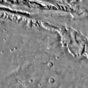
Original A portion of the original image -

3x3 Low Pass Results of a low pass filter using a 3 line by 3 sample box car setting. Note the slight softening of edges and the tiniest craters begin to fade. -
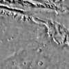
7x7 Low Pass Results of a low pass filter using a 7 line by 7 sample box car setting. Edges have softened, small craters are fading or obliterated. -
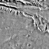
21x21 Low Pass Results of a low pass filter using a 21 line by 21 sample box car setting. The image has blurred quite a bit, small craters have been obliterated, and larger craters and features are becoming difficult to discern.

The Algorithm ¶
The mathematical operation the low pass filter performs in order to achieve these effects is to replace each pixel in the image with the average of all the pixel values in the box car.
Running ISIS3 lowpass ¶
The ISIS3 lowpass application allows you to set what the low and high values that will be included in this operation are and which types of pixels will be changed by the operation. See the lowpass documentation’s parameters section for a full list of parameters and their description.
Uses of the Low Pass Filter ¶
For remote sensing analysis, low pass filtering is useful for subduing or removing detail and enhancing large features or albedo. Choose the box car size based on the size of the details you wish to remove or subdue. In image processing, low pass filters can serve to remove noise, reduce resolution (without reducing the image size), or subdue details in one step of a procedure. In more complicated image processing procedures, the low pass filtered image can be used to return image hues and coloring to the resulting image after other processing procedures have removed them in the process of enhancing details.
Fill-in NULL pixels ¶
The lowpass application can be used to replace Special Pixels with the average of surrounding valid pixels. The average is computed based on the boxcar size (line X sample) that is specified.
Example for filling-in NULL pixels:
lowpass from=input_with_nulls.cub to=output_fill.cub samples=3 lines=3 filter=outside null=yes hrs=no his=no
lrs=no replacement=center
- The average of valid pixels will be computed based on the size of the boxcar (line x sample)
- The larger the boxcar size, the 'smoother' the resulting average will be
- If the desired output is to fill with 'details', the approach would be to fill in with small boxcar sizes (3x3, 5x5) until the special pixel value areas are filled in.
- If any special pixels assigned to be replaced remain in the output, lowpass can be applied consecutively until the desired special pixels are completely filled with surrounding averages.
Similar Filters ¶
- gauss uses a weighted average to compute the new value for the target pixel, with the weight based on the Gaussian distribution as a function of the distance of the boxcar pixel from the target
- noisefilter determines what pixels are considered "noise" based on tolerances provided by the user, and replaces those noise pixels with either the average of the box car or a "null" value based on the user's choice
- divfilter divides the original image values by the average of the boxcar, equivilant to dividing the original image by the low pass filter results of the same image using the ratio application
The High Pass Filter ¶
The Basics of High Pass Filters ¶
The high pass filter allows high frequency data to pass through, suppressing low frequency data. High pass filtering can be useful for finding edges, enhancing lines and edges, or sharpening an image. Small box cars will enhance small features and details. Large box cars will allow large features to pass through, suppressing or eliminating smaller features.
-

Original A portion of the original image -
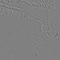
3x3 High Pass Filter Results of a high pass filter using a 3 line by 3 sample box car setting. Edges are sharp and small features stand out, while larger features are neutral -
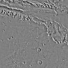
7x7 High Pass Filter Results of a high pass filter using a 7 line by 7 sample box car setting. Edges are sharp and larger features have been enhanced, while the largest features are neutral. -
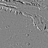
21x21 High Pass Filter Results of a high pass filter using a 21 line by 21 sample box car setting. Edges are sharp and most features stand out, with only the largest changes remaining neutral.

{kind=link}
{kind=link}
{kind=link}
{kind=link}
{kind=link}
{kind=link}
{kind=link}
{kind=link}
The Algorithm ¶
The mathematical operation the high pass filter performs in order to achieve these effects is to replace each pixel in the image with the difference between it and the average of all the pixel values in the box car. This filter can be viewed as a kind of slope filter in that it highlights pixels that have values that are different from their neighboring pixels. The greater the difference, the higher or lower (visually: brighter or darker) the output value will be.
Running ISIS3 highpass ¶
The ISIS3 highpass application allows you to set what the low and high values that will be included in the operation. You can also set the percentage of addback, which will add the original image (weighted by the percent addback chosen) to the high pass results. See the highpass documentation’s parameters section for a full list of parameters and their descriptions.
-
Original A portion of the original image -
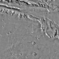
3x3 High Pass Filter with 50% Addback Results of a high pass filter using a 3 line by 3 sample box car setting with 50% of the original image values added to the high pass results. -
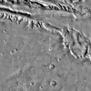
3x3 High Pass Filter with 100% Addback Results of a high pass filter using a 3 line by 3 sample box car setting with 100% of the original image values added to the high pass results. The results appear similar to the original, but sharper.
{kind=link}
{kind=link}
Uses of the High Pass Filter ¶
For remote sensing analysis, high pass filtering is useful for reducing albedo features and enhancing structural details. Choose the box car size based on the size of the structural details you wish to enhance. In image processing, high pass filters can serve to sharpen a fuzzy image when used with addback. In more complicated image processing procedures, the high pass filtered image can be used to return image details to the resulting image after other processing procedures have removed them in the process of removing noise or artifacts.
Similar Filters ¶
- sharpen is a specialized high pass filter that has a preset addback value of 100%, resulting in an image which looks similar to the original, but crisper and sharper
Removing Striping Noise ¶
Summary of the Method ¶
Destriping is a common procedure used on images to remove distracting horizontal or vertical noise in an image. This type of destriping involves running two filters on the original image creating two new images, a low pass filtered image and a high pass filtered image, and combining the results.
Concepts
If both a low pass and a high pass filter of the same size are run on an image and then added together, the result will be the original image. If the filter sizes are not the same the result will not be exactly the same as the original. The goal in choosing sizes for the two filters is to create an output for each without the unwanted striping. If this is accomplished, when the filter outputs are added together the striping will have been removed or subdued. If the sizes of the two filters differ too much, artifacts may be introduced into the result. This type of procedure works very well on horizontal and vertical striping, but is not recommended for diagonal striping.
{kind=link}
Striping Noise Example This Lunar Orbiter image contains horizontal striping noise due to the scanning, output, and transmission phases of its collection
Related ISIS Applications ¶
See the following ISIS documentation for information about the applications you will need to use to perform this procedure:
- lowpass - low pass filter application
- highpass - high pass filter application
- algebra - used to add the results of the low and high pass filters
Some general tips for choosing the filter sizes: ¶
-
The boxcar shapes for both the low pass and high pass filters should be similar in shape to the striping. This is not a firm rule. The filter sizes can be opposite (i.e., long and short -vs- narrow and tall).
-
The size of the low pass filter should be large enough to completely encompass the problem, plus enough extra pixels to keep the average of any boxcar from being overly effected by the striping. A good rule of thumb to start with is a low pass boxcar size twice the size of the striping.
-
The size of the high pass filter should be small enough to completely fit inside the problem, minus enough pixels to keep the average of any boxcar from being overly effected by the striping. A good rule here is to make the high pass filter boxcar size less than one half the size of the striping.
{kind=link}
Striping Close-up: Enlarged view to show the height of the striping. The blocks in the scale bar along the left side of the image measure a 3 pixel by 3 pixel area. The stripes are roughly 7 to 10 pixels high.
Destriping Exercise ¶
Example Images and Striping ¶
The image used in this example is a sub-area of a Lunar Orbiter film strip. The scanning, output, and transmission phases introduced some striping noise.
-
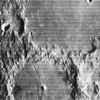
Striping Noise Example This Lunar Orbiter image contains horizontal striping noise due to the scanning, output, and transmission phases of its collection -
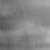
Low pass Filter Results This image is the result of running a low pass filter on the original image, with a boxcar shape that is very wide but not very tall -
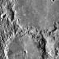
High pass Filter Results This image is the result of running a high pass filter on the original image, with a boxcar shape that is very wide and very short -
Image Sum This image is the result of the low pass and high pass filtered images added together
{kind=link}
{kind=link}
{kind=link}
{kind=link}
Challenge! ¶
Do you think you can get results as good as the ones shown above? Try your hand at destriping the Lunar Orbiter image!
Interactive Destripe Demonstration ¶
Related ISIS3 Applications ¶
See the following ISIS3 documentation for information about the applications you will need to use to perform this procedure:
- lowpass - low pass filter application
- highpass - high pass filter application
- algebra - used to add the results of the low and high pass filters
Removing Seams from Mosaics ¶
Summary of the Method ¶
This method of seam removal involves:
- running a lowpass filter on the mosaicked images,
- running a highpass filter on the individual images that make up the mosaic, then mosaiking the highpass products together, and
- adding the lowpass mosaic to the highpass mosaic.
Concepts ¶
The low pass filter run on the mosaic is used to pull out the overall low frequency information (overall tone and shading, such as albedo) and the high pass filters on the individual images that make up the mosaic are used to get the high frequency information (surface feature details) and normalize the differences between images. The goal when choosing what filter size to use is to pick a filter which easily fits within all the individual images and will not suppress any more data than is necessary when added together.
Normally, if both a low pass and a high pass filter of the same size are run on an image and the results added together, the result will be the original image. However, if the filter sizes are not the same, the result will not be exactly the same as the original. While this procedure uses the same size boxcar for both the low pass and the high pass filters, what makes the difference here is that the low pass is run on the full mosaic and the high pass is run on the individual images.
Some general tips for choosing the filter sizes: ¶
- Both the lowpass and highpass filters boxcar shapes should be exactly the same.
- The size of the filters should easily fit inside all the individual images
Related ISIS3 Applications ¶
See the following ISIS3 documentation for information about the applications you will need to use to perform this procedure:
- lowpass - low pass filter application
- highpass - high pass filter application
- mapmos - mosaic map projected images. Alternatively, use automos
- algebra - used to add the results of the low and high pass filters
Seam Removal Exercise ¶
The images used in this example are sub-areas of overlapping Io images.
{kind=link}
Original Mosaic: This mosaic shows the seams where images overlap
{kind=link}
Seam Removal Result: This image is the result of the low-pass filtered mosaic and mosaicked high-pass filtered images added together.
Challenge! ¶
Do you think you can get results as good as the ones shown above? Try your hand at removing the seams from the Io mosaic!